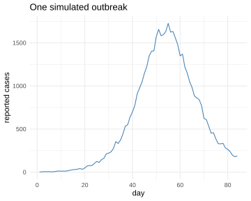
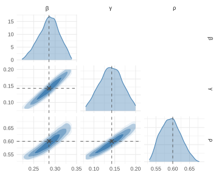
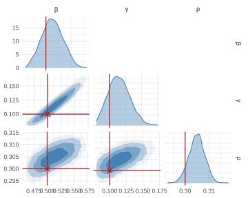
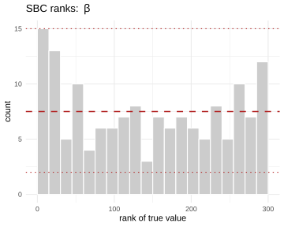
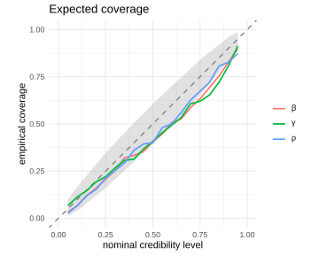

neuralsbi needs two things from you: a prior over the
parameters you want to learn, and a simulator that turns one parameter
set into one data set. It trains a neural network on simulated pairs and
hands back the Bayesian posterior p(\theta |
x). You never write a likelihood.
We use a stochastic SIR epidemic here, a close relative of the model in the package README. It is small enough to read in one screen, and it has no likelihood you would want to write down.
Define your simulator
A population of size N splits into susceptible, infected and recovered. The contact rate \beta drives new infections, the recovery rate \gamma drives recoveries, and we see a fraction \rho of the new infections as reported cases, totalled by week. Infections and recoveries are binomial draws, so two runs at the same parameters give different curves.
library(neuralsbi)
sir_simulator <- function(beta, gamma, rho, N = 1e5, I0 = 20, weeks = 12) {
S <- N - I0; I <- I0
reported <- numeric(weeks)
for (w in seq_len(weeks)) {
infections <- 0
for (d in seq_len(7)) { # a day at a time
new_inf <- rbinom(1, S, 1 - exp(-beta * I / N))
new_rec <- rbinom(1, I, 1 - exp(-gamma))
S <- S - new_inf
I <- I + new_inf - new_rec
infections <- infections + new_inf
}
reported[w] <- rbinom(1, infections, rho) # only rho of them are seen
}
log1p(reported)
}That is the whole model specification. Note what is missing: nowhere
do we write down how probable a case curve is at a given (\beta, \gamma, \rho). neuralsbi
only ever calls the simulator.
The simulator returns \log(1 +
\text{cases}) rather than raw counts. npe()
standardizes whatever the simulator gives it. Across this prior the
weekly counts run from a handful to tens of thousands, which is a wide
range for one scale to cover. The log keeps the small outbreaks legible
next to the large ones.
Here is one epidemic, on the natural count scale:
theta_true <- c(beta = 2 / 7, gamma = 1 / 7, rho = 0.6) # R0 = 2, 7-day recovery
set.seed(1)
x_obs <- sir_simulator(theta_true[["beta"]], theta_true[["gamma"]],
theta_true[["rho"]])
plot(1:12, expm1(x_obs), type = "b", pch = 16,
xlab = "week", ylab = "reported cases", main = "One simulated outbreak")
plot of chunk outbreak
Reported cases climb from 34 in the first week to about 11,000 in week 8, then fall away as the susceptible pool empties. Those twelve numbers are the entire data set for everything below.
Train your neural posterior estimator
The prior says where the simulator is allowed to look. We put uniform priors on all three parameters, wide enough to cover slow and fast epidemics and any reporting rate between 10% and 90%.
prior <- prior_uniform(low = c(beta = 0.20, gamma = 0.08, rho = 0.1),
high = c(beta = 0.60, gamma = 0.20, rho = 0.9))
fit <- npe(prior, sir_simulator, n_simulations = 8000, seed = 1)
fit
#> <nsbi_npe> Neural Posterior Estimation fit
#> density estimator : maf
#> parameters (dim) : 3
#> names : beta, gamma, rho
#> data (dim) : 12
#> simulations : 8000
#> best val loss : -3.3695
#> -> build a posterior with posterior(fit, x_obs = ...)That is the whole fit. npe() drew 8000 parameter sets
from the prior, ran the simulator on each, and trained a masked
autoregressive flow on the resulting (\theta,
x) pairs. best val loss is the average negative log
density on held-out simulations. It is useful for comparing fits on the
same problem and means nothing across problems.
Simulation is usually the expensive part, and it is embarrassingly
parallel. Declare a future plan once and every
neuralsbi function that calls a simulator spreads the work
across cores:
Each simulation draws from its own random-number stream, so a given
set.seed() gives the same answer on one core and on 32.
This article is built with a plan declared. See
?nsbi_parallel.
Condition on your data to get a posterior
posterior() conditions the trained estimator on an
observation. It is a forward pass through the network, so it returns
immediately, and sample() draws from it.
post <- posterior(fit, x_obs = x_obs)
draws <- sample(post, 4000)
round(colMeans(draws), 3)
#> beta gamma rho
#> 0.285 0.140 0.593
pairplot(draws, truth = theta_true)
plot of chunk posterior
The posterior covers the values that generated x_obs. It
also shows the ridge every SIR fit runs into: \beta and \gamma trade off against each other, because
a case curve pins down their ratio R_0 =
\beta/\gamma much better than either rate alone.
vignette("intro-to-sbi") picks that up and reads R_0 off the draws.
One fit, any number of outbreaks
The fit is amortized. It was trained over the whole prior, not around one observation, so a second outbreak costs a forward pass and nothing else. No re-simulating and no retraining.
theta_2 <- c(beta = 0.5, gamma = 0.1, rho = 0.3) # R0 = 5, poorly reported
x_obs_2 <- sir_simulator(theta_2[["beta"]], theta_2[["gamma"]], theta_2[["rho"]])
draws_2 <- sample(posterior(fit, x_obs = x_obs_2), 4000)
round(colMeans(draws_2), 3)
#> beta gamma rho
#> 0.513 0.115 0.305
pairplot(draws_2, truth = theta_2)
plot of chunk second
This is the practical difference from likelihood-based MCMC, which starts over for every new data set. Fit once, then condition on as many outbreaks as you have.
Check the fit before you trust it
A trained estimator always returns something. Draws, means, intervals, all of it, whether or not the fit is any good. Simulation-based calibration tells you whether to believe the widths: draw \theta from the prior, simulate x from it, and rank that known \theta among posterior draws conditioned on x. A calibrated posterior puts the truth anywhere in the ranking with equal probability, so the ranks come out uniform.
res <- sbc(fit, sir_simulator, n_sbc = 150, n_posterior_samples = 300, seed = 2)
res
#> <nsbi_sbc> 150 trials, 300 posterior samples each
#> per-parameter uniformity p-values (large = calibrated):
#> beta=0.191 gamma=0.023 rho=0.040
plot_sbc(res, param = 1)
plot of chunk sbc
plot_coverage(res)
plot of chunk sbc
Read the p-values, not the fact that the check ran. \beta comes back clean at 0.19. \gamma (0.023) and \rho (0.040) fall just under the conventional 0.05, and the coverage curve runs slightly below the diagonal. That is mild overconfidence: the intervals are a little too narrow rather than in the wrong place.
A first pass at 8000 simulations often looks like this, and the
remedy is more simulations before a bigger network.
vignette("diagnostics") covers how to read these plots and
what to do when a fit does not pass.
Where next
-
vignette("intro-to-sbi")explains what the method is doing with the same model. It covers why a simulator replaces the likelihood, what amortization buys across many outbreaks, and how to read R_0 off the posterior draws. -
vignette("density-estimators")compares the estimators behindnpe()and says when each one is worth using. -
vignette("diagnostics")covers the full set of checks: SBC, expected coverage, TARP, and posterior predictive checks. -
vignette("sir-epidemic")putsneuralsbinext topompon the same epidemic and compares the two posteriors.
?npe, ?posterior and ?sbc
document every argument.